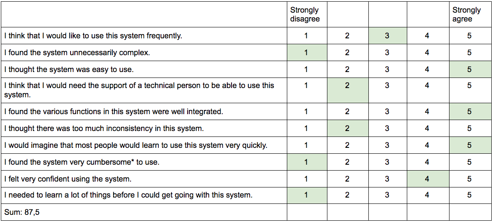

Client: Bark Arkitekter AS
Contact Person: Frode Brurberg, CEO, partner and architect MNAL in Bark Arkitekter AS.
Bark Arkitekter (est. 2006) is a small architect firm based in Stavanger, Norway, that works on producing timeless building design in the Stavanger region. The firm consists of five architects MNAL who have all gotten their education from different parts of the world – Brighton, Auckland, Oslo, Trondheim and Bergen – making their design many-sided and unique. They aim to find the best solution for a building’s design in cooperation with the client, and are consistently trying to understand what it really is that the client wants. Bark’s projects vary from private houses and cabins to public schools and kindergartens, as well as commercial building projects.
To be able to constructively examine the usability of the website we have used design methodology to produce usability tests. By using methods such as semi-structured interviewing, observation in combination with “thinking aloud”, eye-tracking and check forms we have managed to get an overview on how the website succeeds and comes short in regards to functional usability and joy. The aspects of enjoyment were especially important when developing the website.
According to Jakob Nielsen and Tom Landauer in the Nielsen Norman Group (NN/g) it is not necessary to test more than five users (15 at most). Instead of creating a google form and gathering answers from a lot of users, we have therefore used our time on careful observation and interviewing of seven users.
For the observation we made some common tasks to be able to understand how different users experienced the same functions. We were careful not to guide the users.
Tasks for observation:
For the semi-structured interview we had prepared a list of questions, but opened to ask other questions coming to mind. We were also careful to include open questions about the structure and look of the website, and to avoid asking leading questions. We interviewed the users after the observation. In this way the participants had already gotten familiar with the website.
When completed both observation and interview, the participants were asked to fill out a System Usability Scale (SUS). This enabled us to calculate how user-friendly our website was.
When calculating the score from the different participants, we got an average score of 86 out of 100. Based on research, a SUS score above a 68 would be considered above average and anything below 68 is below average. This implies that the usability of our website is very good.
As we were making a website that should be appealing for both potential clients and employees, we found participants that could fit this description. Taking Nielsen and Landauer’s findings into account, we aimed to test at least five relevant users. As Nora’s and Vilde’s mothers are both architects, it was quite simple to test representatives from the relevant user group. We also contacted architecture students for testing as they are potential future employees, and tend to use websites like this rather often for inspiration and education. In addition to the professionals, we wanted to get an understanding of how user-friendly the website was for potential clients. We therefore tested users that did not have any professional knowledge of architecture or design.
As well as testing Frode Brurberg (53), the CEO of Bark and our client, we tested:
All testers have been given new names as they have the right to be anonymous, and all have been methodically and meticulously live tested.
For the testing we used different types of devices and different sizes of viewports. Amongst the different devices were an 11 inch Macbook Pro, a large iMac, a 24 inch Lenovo, iPhone 8 and 13 inch Macbook Pro. In addition to the different full screen sizes, we also adjusted the viewport size on the different devices so the user could see that it was responsive.
As well as a variety of devices, we tested several browsers: Firefox, google chrome and safari. Firefox and chrome worked fine, but when using Safari there were some image problems.
In total, the participants were rather pleased with the website. They found it clean and simple to use, and especially liked it having interactive functions. All participants thought of Bark as a serious and professional firm based on their website design, and all participants would consider working with Bark.
Some of the feedback was easy to implement right away, such as the comments for the “om oss” page regarding a new image and alphabetical sorting of the employees. When looking at the width of the textbox in “Om oss”, this would also be easy to change, however we would like it to stay that way for a more dynamic website design.
It would also be easy to change the font size for better readability.
When it comes to more information regarding projects, the employees and the company, this would be really easy to implement, but it would be up to Bark if they would like to add this information to the website or not. As for images of the employees, this was something we suggested to Bark in the sketching phase of the project, but they were hesitant.
There were several comments from the testing that we would like to consider implementing in the future.
We would want to make the timeline more personal for Bark, and make it more obvious that it in fact is a timeline. This could be done by including milestones, news or other “personal” happenings for Bark. This way the timeline could have another function than to see their projects once more. We could also have spent time on making it interactive and “dragable”, making it possible to add more elements to it.
The sorting button, and its functions, would have benefitted from some more work, however this would be quite time consuming in regards to both code developing and design. We would iterate the solution and try to find a more user-friendly, distinct and intuitive way of sorting projects.
We would definitely work on finding a better system for images as this was a core to a lot of our problems. By finding a better system we could have more images for each project, making the experience better for the users.
When it comes to the website being responsive, we would have used more time to make the overlay better for phones, as it now is somewhat strange. This is probably due to the styling in the script overwriting the responsive css. The overlay should also be more consistent in terms of image sizing.
We would have implemented a search function for the users who are looking for one specific project. We believe this too would also be rather time consuming as we are not familiar with building searching functions. It would however probably be possible to use a javascript filtering function to run through our prosjektlist.js and find the correct project. This could probably be integrated in the sorting button for the layout to look the same as today. Then again most users would try to find a search button in the navigation bar or at the top of the page. As we can see, the search function would possibly be rather difficult to implement.
Finally some images tend to be quite large depending on the size of the viewport. This is not a quick fix, but would definitely be doable. It would just demand some time and debugging of code.
The prosjektlist.js is a library we have made to access information about the different projects. There are several variables that we have not used, but that we would like to utilize in further development, such as a list of images. We could also easily add more information to our library, and thereby easily expand the website.
Our group, residing in three different parts of the world (Norway, China and Iran), have definitely learned one or two things about digital interdisciplinary team work. We have worked different hours due to the difference in time zones, and have had the challenge of finding hours that work for all of us.
With the design process in mind we have learned a lot about how good responsive design is significant to create the best possible user-experience. We have been made aware of how much work is put into creating beautiful and functional responsive design, and how vital it is that it is done, and particularly done correctly.
What has been a great experience for us, as mentioned earlier, is especially the interdisciplinary work. The designers have gained far more understanding of the possibilities in front-end development, and possibly even more understanding of what its limits are. We are now able to communicate with developers on a higher level, and actually be able to understand their language and terminology. We see it as a great advantage having experience with web development.
As well as having gained insight in the world of the developers, we designers have had the opportunity of creating our own project and designing for a real client. Furthermore we have had significant and constructive practice with web design that is a great starting point for future work.
Although we have had loads of challenges with the stylesheets and scripts, we have been lucky enough to spar with our team members and receive invaluable help from talented studasses and Hedvig's father.